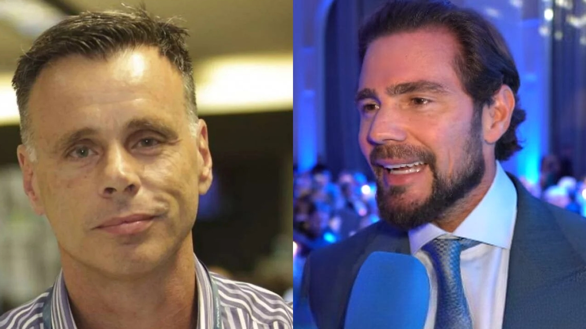

Ameaçar quebrar todos os dentes de jornalista é ato antidemocrático ou faz parte da democracia inabalável?
Na democracia inabalável, um banqueiro envolvido em um escândalo de R$ 50 bilhões queria apenas esmurrar a cara e quebrar todos os dentes de um jornalista de um grande jornal do país. Nada demais. Só uma divergência editorial resolvida a socos. Um debate republicano conduzido com maxilares fraturados.
O detalhe pitoresco é que o jornalista fazia o que jornalistas fazem. Denunciava, investigava, escrevia. Crime hediondo. Imperdoável. Atentado contra o sagrado direito de um poderoso não ser contrariado.
Mas calma. O banqueiro é amigo pessoal de dois ministros do Supremo Tribunal Federal. Amigo de frequentar mansão. Amigo de voar de jatinho. Amigo de circular pelos corredores acarpetados da mais alta Corte do país. Amigo de contratar o escritório de advocacia da esposa de um desses ministros por R$ 129 milhões para defendê-lo. Cento e vinte e nove milhões.
Imagine por um segundo, só um segundo, se esse banqueiro fosse amigo de Jair Bolsonaro.
Imagine as manchetes em neon. As coletivas inflamadas. As teses sobre ruptura institucional. As lives indignadas. Os editoriais aos berros falando em “fim da República”. Teríamos documentários na Netflix (bancados pela Lei Rouanet, claro!), podcasts em série, threads intermináveis, aulas magnas sobre promiscuidade entre poder econômico e poder togado.
Seria um escândalo de dimensões épicas. Mas respire. Relaxe. Tome um café.
Graças a Alá, ou ao acaso ideológico. ele é amigo de Luiz Inácio Lula da Silva. E, sendo assim, as instituições seguem funcionando normalmente no Brasil.
Nada para ver aqui.
Um banqueiro irritado querendo quebrar dentes de jornalista? Um plano grotesco travestido de assalto? Relações íntimas com a cúpula do Judiciário? Conexões políticas convenientes?
Exagero seu. Teoria conspiratória. Radicalismo retórico da extrema ultra radical direita bolsonarista. A democracia esteve ameaçada com uma pichação de batom em uma estátua.
Hoje, as instituições estão sólidas. Firmes. Inabaláveis.
Circulando… circulando… você não viu nada por aqui.